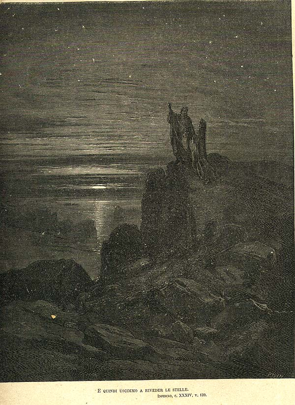

Canto XXXIV

Tanto ch'i' vidi de le cose belle
Che porta 'l ciel, per un pertugio tondo:
E quindi uscimmo a riveder le stelle.
La xilografia sigilla l'Inferno e rappresenta il culmine della transizione dall'angoscia alla speranza teologale (e quindi uscimmo a riveder le stelle). Dante e Virgilio sono accolti dal candore delle stelle, incise come punti di luce pura nella trama del cielo.
| Identificativo | Oggetto 34 |
|---|---|
| Canto | XXXIV |
| Cerchio | Nono cerchio |
| Personaggi | DanteVIAF VirgilioVIAF |
| Creatore | Gustave DoréVIAF |
| Data di creazione | 1861 |
| Luogo di creazione | ParigiGeoNames |
| Stile | RomanticismoAAT |
| Tecnica | XilografiaAAT |
| Editore | HachetteVIAF |
| Temi | Opere d'arte Romanticismo Ottocento |
Sfoglia il libro: